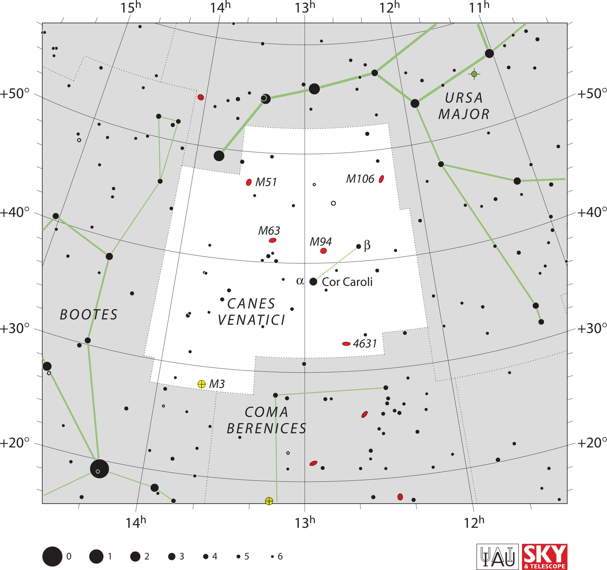

<div data-role="page" id="canesVenatici" data-theme="a">

	<div data-role="header">
		<a href="#home" data-icon="back" data-rel="back">Back</a>
		<h1>Canes Venatici</h1>
		<a href="#home" data-icon="home">Home</a>
	</div>


	<div data-role="content">

		<div class="cssImageMap">
			

			<a href="../messier/m51.html" class="messier" data-x="800"
				data-y="570" data-width="150" data-height="70"></a>

			<a href="../messier/m106.html" class="messier" data-x="1140"
				data-y="560" data-width="150" data-height="70"></a>

			<a href="../messier/m63.html" class="messier" data-x="840"
				data-y="740" data-width="140" data-height="80"></a>

			<a href="../messier/m94.html" class="messier" data-x="1010"
				data-y="780" data-width="120" data-height="80"></a>

			<a href="../messier/m3.html" class="messier" data-x="640"
				data-y="1250" data-width="150" data-height="70"></a>


			<a href="bootes.html" class="constellation" data-side="left"
				data-x="180" data-y="1010" data-width="250" data-height="70"></a>

			<a href="ursaMajor.html" class="constellation" data-side="right"
				data-x="1440" data-y="290" data-width="250" data-height="140"></a>

			<a href="comaBerenices.html" class="constellation" data-side="right"
				data-x="730" data-y="1330" data-width="300" data-height="150"></a>

		</div>

		<div id="here">
			<h2>Canes Venatici</h2>

			<p>Image Credit: IAU and Sky & Telescope magazine (Roger Sinnott
				& Rick Fienberg)
		</div>
	</div>
</div>
